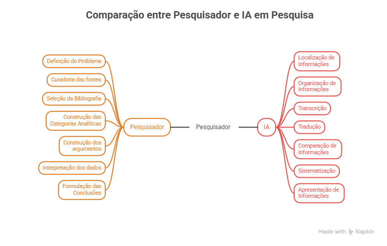

4. Aplicações e especificidades na pesquisa¶
O uso e os cuidados ao utilizar IA variam conforme as diferentes etapas da pesquisa, do ensino e da comunicação científica. Uma mesma ferramenta pode ser adequada para uma tarefa operacional e inadequada para uma tarefa interpretativa. Por isso, mais importante do que classificar uma ferramenta como “boa” ou “ruim” é compreender qual papel ela desempenha no processo de produção do conhecimento.
Uma transcrição automática de uma entrevista, a classificação de um conjunto documental, a tradução de uma fonte histórica e a produção de uma imagem para divulgação não apresentam os mesmos riscos, ainda que utilizem tecnologias semelhantes. Pesquisa, ensino, patrimônio e divulgação trabalham com objetos e métodos próprios — a documentação e a preservação de acervos, por exemplo, atravessam mais de uma dessas frentes ao mesmo tempo —, e por isso um mesmo cuidado se aplica de formas diferentes em cada uma.
O primeiro cuidado consiste, portanto, em distinguir assistência de substituição. A IA pode auxiliar na localização, organização, transcrição, tradução, comparação, sistematização e apresentação de informações. À medida que a tarefa se aproxima da definição do problema, da seleção das evidências, da construção das categorias analíticas, da interpretação e da formulação das conclusões, entretanto, aumenta a necessidade de participação direta e controle do pesquisador, docente, estudante ou profissional responsável. A imagem a seguir ilustra esse processo.

Figura 4. Comparação entre as atribuições do pesquisador e da IA na pesquisa.
conteúdo elaborado pelas autoras, com design criado pelo napkin.ai
Há ainda uma questão anterior à própria verificação das respostas: a IA também pode interferir naquilo que chega a ser pesquisado. Ao sugerir palavras-chave, autores, categorias, fontes ou hipóteses, a ferramenta participa da seleção inicial do objeto. Uma resposta equivocada pode, assim, não apenas introduzir um erro no resultado final, mas orientar a pesquisa para determinados caminhos e afastá-la de outros. Como já mencionado no item sobre vieses, sugestões produzidas por IAG são pontos de partida para investigação, a confirmar sempre pela consulta às fontes.
Em atividades de pesquisa, esse princípio implica reconhecer que a IA auxilia na descoberta de material relevante, sem substituir a fonte em si. Uma referência, documento, dado, citação ou informação sugerida por uma ferramenta somente integra a pesquisa depois de localizada, examinada e validada de forma independente.
Também é necessário considerar que a incorporação de IA modifica o próprio processo metodológico. Quando uma ferramenta participa da transcrição, tradução, classificação, geração de imagens ou organização de um corpus, seu uso passa a fazer parte do percurso da pesquisa e deve ser documentado. O registro deve ser proporcional à relevância da ferramenta para o resultado: quanto maior sua influência sobre os dados, métodos ou interpretações, maior deve ser a transparência sobre o procedimento empregado.
Na prática
Antes de utilizar IA em uma etapa de pesquisa ou produção de conteúdo, pergunte:
-
Que tarefa estou delegando à ferramenta?
-
Essa tarefa é operacional ou envolve uma decisão interpretativa?
-
O uso da ferramenta pode alterar, simplificar ou introduzir categorias que não estavam presentes no material original?
-
Se outra pessoa precisar compreender ou reproduzir meu procedimento, haverá informação suficiente para entender como a IA foi utilizada?
-
Estou usando a ferramenta para ampliar minha capacidade de análise ou para evitar uma operação intelectual que deveria realizar diretamente?
As subseções seguintes apresentam questões específicas para história das ciências e da saúde, patrimônio, e divulgação científica — as principais frentes de pesquisa e produção da Casa de Oswaldo Cruz. Os cuidados específicos ao ensino, por sua vez, estão desenvolvidos na seção 5, dedicada às diretrizes por público.
4.1 Pesquisa bibliográfica¶
A revisão de literatura foi uma das primeiras etapas da pesquisa a ganhar ferramentas de IA de uso corrente, e é também uma das que melhor ilustram a diferença entre um bom e um mau uso dessas tecnologias. Convém separar, de saída, dois tipos de ferramenta que costumam ser confundidos. De um lado, há bases e motores de busca acadêmicos que usam IA para organizar e recomendar publicações, casos do Semantic Scholar e do OpenAlex, ambos gratuitos e de grande cobertura, ou de ferramentas de descoberta por mapas de citação como o ResearchRabbit, o Connected Papers e o Litmaps, úteis para visualizar como um campo se organiza a partir de um artigo de referência. De outro, há assistentes baseados em IA generativa que também resumem, extraem dados e "conversam" com os textos, como o Elicit, o Consensus e o Scite.
Essa distinção importa porque os riscos são distintos. As ferramentas de descoberta ampliam o alcance da busca e ajudam a escapar da bolha das referências já conhecidas, mas não dispensam a leitura: um mapa de citações mostra conexões, não a qualidade ou a pertinência de um trabalho. Já os assistentes generativos, ao produzir resumos e respostas em linguagem natural, introduzem o risco da alucinação no coração da revisão bibliográfica: podem atribuir a um artigo uma conclusão que ele não sustenta, ou sintetizar de forma enviesada um debate (Lima, 2026). Nenhum deles substitui a leitura crítica das fontes, todas as ferramentas disponíveis neste sentido são auxiliares e seus variados outputs, sejam indicações, sejam comentários resumidos de um texto, exigem verificação do que produzem contra os textos originais. Outro elemento que merece atenção, ao utilizar ferramentas de pesquisa bibliográfica é saber a que bases de indexação a ferramenta tem acesso, como se costuma dizer (e mencionamos no nosso curso!): é primordial saber o tamanho da piscina, do lago ou do oceano onde estamos pescando. Noutras palavras, se a base for limitada, será como estar pescando em um pequeno tanque!
Entre as iniciativas nacionais, o Oxóssi, motor de busca acadêmico desenvolvido no laboratório de Tiago Gil na UnB, merece registro justamente por inverter a lógica das ferramentas comerciais. Concebido por e para historiadores, com foco inicial em fontes da história do Brasil colonial, ele nasce da crítica à dependência de sistemas de busca proprietários e opacos, e adota um funcionamento auditável, de código e método abertos, em que as decisões técnicas ficam expostas ao escrutínio de quem usa (Gil, 2024). Oxóssi vale menos como recomendação de uso imediato aqui, já que ainda tem cobertura restrita e encontra-se em fase de registro, mas nos parece um exemplo interessante a se destacar por ilustrar um princípio caro a este Guia: o de que a transparência das ferramentas é condição para uma melhor realização crítica das fontes.
Duas cautelas fecham esta subseção. A primeira é a validação: qualquer referência sugerida por uma ferramenta de IA precisa ter sua existência e seu conteúdo conferidos na fonte, pois uma citação plausível pode simplesmente não existir (ver seção 6, "Como verificar se uma fonte sugerida por IA existe?"). A segunda é a transparência: quando uma ferramenta de descoberta ou de síntese automatizada faz parte da estratégia de busca, isso deve ser declarado, informando a ferramenta, a data de uso e como as sugestões foram verificadas, do mesmo modo que se descreve qualquer método de levantamento bibliográfico, conforme discutido na seção 3.
4.2 Análise documental¶
A análise documental é, provavelmente, a frente em que a IA oferece o ganho mais tangível ao historiador das ciências, e também aquela em que a fronteira entre tarefa técnica e interpretação precisa ser traçada com mais cuidado. O ganho concentra-se na etapa de leitura mecânica das fontes. Para documentos manuscritos, ferramentas de reconhecimento de texto manuscrito (HTR) como o Transkribus e o eScriptorium convertem imagens de cartas, atas e registros paroquiais em texto editável, e permitem treinar modelos específicos para uma caligrafia ou um período. Já para documentos impressos ou datilografados, o problema é de reconhecimento óptico de caracteres (OCR), resolvido por ferramentas como o Tesseract e o OCRmyPDF, que tornam pesquisável um PDF que antes era só imagem. Em nosso dia a dia, talvez já estejamos mais familiarizados com a presença de textos OCRizados, por assim dizer (cujos caracteres já foram reconhecidos), mas a aplicação de HTR têm se tornado cada vez mais recorrente. Por mais que possa parecer simples a disponibilização de uma transcrição via máquina, um estudo recente refletindo sobre essa técnica no âmbito do Arquivo Nacional Brasileiro reflete que esta não é uma passagem pueril. Segundo os autores, a “incorporação de sistemas de Reconhecimento de Texto Manuscrito às práticas arquivísticas e historiográficas altera de modo significativo as condições de acesso, legibilidade e mobilização da evidência histórica em ambientes mediados por infraestruturas digitais” (Souza e Souza, 2026, p. 66).
Um risco concreto dessa etapa é o preenchimento de lacunas. Diante de um trecho ilegível ou de baixa qualidade, a ferramenta pode inventar uma palavra ou frase plausível para completar o vazio, introduzindo com isso um termo ou uma categoria contemporânea onde o documento original guardava silêncio ou usava outro vocabulário. O erro de reconhecimento e o anacronismo nascem, assim, do mesmo mecanismo: a ferramenta preenche o que não sabe com o que é estatisticamente provável, não com o que a fonte de fato registra.
Vale um registro adicional. Essas ferramentas de reconhecimento nem sempre foram treinadas com fontes brasileiras, e o desempenho cai diante de caligrafias e grafias que modelos de origem anglófona pouco viram. Iniciativas nacionais começam a responder a essa lacuna: o Transcritor-IA, desenvolvido no IFCE, campus de Aracati, oferece transcrição assistida de manuscritos com modelos de HTR treinados a partir das próprias correções do usuário, apoiados na biblioteca aberta PyLaia, e está disponível para uso na web. É um exemplo concreto de como a soberania sobre os dados de treinamento se traduz em melhor desempenho para as fontes com que de fato trabalhamos.
Uma vez convertido o texto, entra a organização das fontes, e aqui vale distinguir atividades que parecem próximas. Organizar e anotar as fotografias de arquivo que o pesquisador acumula é a função de uma ferramenta como o Tropy; descrever formalmente um acervo, segundo normas arquivísticas, é tarefa de um sistema como o AtoM. São etapas complementares, não necessariamente intercambiáveis.
Da mesma forma, uma ferramenta pode identificar padrões em um conjunto documental ou propor agrupamentos temáticos, porém essas classificações não devem ser incorporadas automaticamente como categorias de pesquisa. Cabe ao pesquisador avaliar se elas correspondem ao problema de pesquisa, ao corpus e ao referencial teórico mobilizado, ou se são apenas classificações produzidas pelo sistema.
O limite, porém, precisa ficar explícito. Todas essas ferramentas atuam sobre a materialidade das fontes (leem, convertem, organizam, descrevem), mas nenhuma as interpreta no sentido hermenêutico, da leitura aproximada. O reconhecimento automático de um documento não é sua compreensão histórica; a extração de entidades ou a sumarização automática de um maço de processos não substitui a crítica das fontes, a contextualização e a leitura atenta ao que o documento cala. A IA pode abrir portas a outras mobilidades de acesso ao texto; a interpretação desse texto permanece, integralmente, trabalho de quem pesquisa, e é justamente o tempo economizado na transcrição que pode ser reinvestido nessa interpretação.
4.3 Patrimônio, acervos e preservação¶
No campo do patrimônio, a IA já não ocupa um papel meramente coadjuvante. Sistemas de reconhecimento de texto e imagem, extração de entidades, classificação automática e busca semântica permitem trabalhar com acervos numa escala antes impraticável. Coleções digitalizadas também podem ser preparadas como conjuntos de dados, como ocorre no British Library Book Images1, que reúne mais de um milhão de imagens extraídas de livros. Essa mudança de escala, contudo, depende de uma infraestrutura documental anterior à IA. Metadados consistentes, identificadores persistentes, vocabulários controlados e padrões de interoperabilidade permitem localizar, relacionar e reutilizar objetos digitais. Nenhum padrão garante, por si só, uma migração sem perdas, isso depende da qualidade dos registros, do mapeamento entre esquemas e da preservação das relações e da proveniência.
É importante distinguir as plataformas de gestão (ditos CMS, Content Management System) da publicação dos recursos de IA que podem operar sobre os acervos. Omeka S e Tainacan, por exemplo, são sistemas de gestão que organizam e publicam coleções digitais; o AtoM apoia a descrição arquivística baseada em fundos, séries e proveniência; e o Mukurtu incorpora protocolos culturais definidos pelas comunidades envolvidas. Essas plataformas não são sistemas de IA: estruturam os dados sobre os quais recursos automáticos podem produzir transcrições preliminares, identificar entidades, sugerir termos de indexação, traduzir descrições ou ampliar as possibilidades de busca assistidas por IA, com supervisão humana. Uma experiência ainda em desenvolvimento com o arquivo fotográfico Sven Simon2 organiza esse trabalho em camadas, mantendo separadas as informações das fontes, as inferências da máquina e as descrições validadas. Pessoas, lugares, datas, acontecimentos e direitos permanecem sujeitos à conferência especializada (Golomb, 2026, p. 4–8).
Para pesquisadores da Casa de Oswaldo Cruz, esses usos tornam-se concretos diante da diversidade documental do patrimônio das ciências e da saúde. O reconhecimento de texto pode facilitar buscas em correspondências, relatórios, portarias e registros de pesquisa; a extração de entidades pode sugerir ocorrências de pessoas, instituições, lugares, doenças, campanhas sanitárias e políticas públicas, sem desfazer a proveniência arquivística; a visão computacional pode apoiar a localização de imagens semelhantes; e o reconhecimento de fala pode produzir transcrições sincronizadas e índices preliminares para depoimentos de história oral. Resultados revistos, como transcrições, tabelas de entidades, índices temáticos, vocabulários ou anotações de imagens, podem então constituir conjuntos de dados depositáveis no Arca Dados3, desde que cada registro mantenha ligação com o documento, o fundo ou a coleção de origem.
No patrimônio da saúde, a validação deve considerar não apenas a precisão, mas a sensibilidade dos dados tratados e avaliar a pertinência de sua completa divulgação. Documentos podem conter nomes, diagnósticos e informações sobre saúde mental, deficiência, raça, sexualidade ou institucionalização cuja abertura pode ser considerada prejudicial para a comunidade. Estratégias de anonimização ou pseudonimização podem ajudar a mitigar alguns riscos no tratamento dessa documentação, mas ainda assim vale o cuidado redobrado. Sistemas automáticos podem associar pessoas equivocadamente, reproduzir termos discriminatórios ou substituir categorias históricas por equivalentes contemporâneos, apagando seu contexto. Em caso de documentos e informações sensíveis, antes do processamento, é necessário verificar direitos e restrições de acesso, reduzir os dados ao mínimo necessário e não enviar documentos pessoais ou sensíveis a serviços externos não autorizados, isto é, optar por modelos locais (sem processamento em nuvem) sempre que possível.
Uma frente ainda pouco explorada diz respeito ao patrimônio de gênese digital: registros, publicações e materiais que só existem em formato digital, como sites institucionais, exposições virtuais e produções que documentam a história da instituição nascidas já no ambiente digital. Um mapeamento recente de iniciativas internacionais de preservação, como Rhizome e a Electronic Literature Organization (ELO), constatou que nenhuma delas documenta, até o momento, o uso de IA em suas técnicas de preservação: emulação, migração de formato e arquivamento seguem operando com scripts e configurações manuais (Gobira; Corrêa, 2026). Isso situa o potencial da IA nesse campo como um apoio ainda em construção: seu papel mais concreto hoje está na documentação dos scripts que sustentam ambientes de emulação, no enriquecimento de metadados de coleções digitais, e na detecção antecipada de falhas ou corrupção de arquivos, sempre subsidiando decisões que permanecem do especialista em preservação digital.
Na prática
☐ Use IA para reconhecer texto, extrair entidades e localizar imagens semelhantes em grandes acervos, mas mantenha a atribuição de autenticidade, datação e proveniência como conferência de quem tem formação para examinar o objeto.
☐ Distinga a plataforma de gestão do acervo (CMS) dos recursos de IA que operam sobre ela, mantendo sempre separadas as informações da fonte, as inferências da máquina e as descrições já validadas por especialista.
☐ Antes de depositar um conjunto de dados no Arca Dados, confirme que cada registro mantém ligação com o documento, o fundo ou a coleção de origem.
☐ Em documentos do patrimônio da saúde com dados sensíveis (diagnósticos, raça, sexualidade, institucionalização), reduza a informação ao mínimo necessário, verifique direitos de acesso e prefira modelos locais a serviços externos não autorizados.
☐ Em acervos de gênese digital, use IA para documentação de scripts, metadados e detecção de falhas, deixando emulação e migração a cargo do especialista em preservação digital.
4.4 Divulgação e comunicação científica¶
4.4.1 Comunicação pública e representação da ciência hoje¶
Diante de controvérsias científicas, diferentes ferramentas de IA podem ajudar a mapear o estado de um debate: quais posições existem, com que evidência cada uma conta, onde há consenso e onde há disputas. A decisão sobre o que apresentar como consenso ou disputa, e sobre o que é desinformação sem lastro científico, cabe ao pesquisador, com base nessa varredura.
Na educação museal e na itinerância, por exemplo, a IA pode preparar roteiros, antecipar perguntas frequentes e sugerir formas de adaptar uma mesma mediação a públicos variados, dando ao educador mais repertório para a interação ao vivo. É justamente essa interação, a pergunta inesperada, o repertório local do visitante, a leitura da sala, que continua sendo o centro do trabalho de mediação.
A geração de imagens e exemplos também merece atenção: o pesquisador pode usar ferramentas de IA para produzir material visual diverso, com cientistas de diferentes gêneros, etnias e contextos, ampliando o repertório disponível para representar a ciência. Essa diversidade não vem por padrão: pedida sem qualificação, a ferramenta tende a gerar a imagem mais frequente em seus dados de treinamento, quase sempre um homem branco de jaleco em um laboratório. Produzir uma representação mais plural exige que o pesquisador especifique o que pretende (a área, o contexto de trabalho, quem deveria aparecer) e revise cada resultado antes de publicar.
4.4.2 Representações de IA sobre o passado¶
Na divulgação científica, as ferramentas de IA generativa de uso geral, como o ChatGPT, o Claude e o Gemini, podem auxiliar na preparação de conteúdos para diferentes públicos e formatos, desde que trabalhem a partir de informações previamente verificadas e que seus resultados sejam submetidos à revisão especializada. Além de sugerir títulos, roteiros e formulações mais acessíveis, esses sistemas vêm sendo empregados em formas experimentais de mediação do conhecimento histórico. Entre elas estão os chamados chatbots históricos, que simulam diálogos com personagens do passado. Essas experiências podem despertar a curiosidade e servir de ponto de partida para discutir contexto, causalidade e diferentes interpretações historiográficas, mas não devem ser apresentadas como acesso direto à voz ou ao pensamento do personagem representado. As respostas precisam ser confrontadas com fontes e acompanhadas por orientação crítica, pois podem reproduzir anacronismos, simplificações e perspectivas estranhas ao contexto histórico (Piro Mittelman, 2025, p. 175–176).
Esses usos também podem ser pensados a partir da fabulação, entendida não como abandono do compromisso com o conhecimento histórico, mas como exercício produtivo da imaginação.4 A animação de personagens históricas em vídeos e fotos, nesse contexto da fábula e de abordagens lúdicas têm ganhado espaço. Além de imagens animadas, também têm se popularizado o uso de avatares gerados por IA, como aquele do totem instalado no hall da Academia Brasileira de Letras (ABL), no Rio de Janeiro, com animação do autor Machado de Assis, permitindo ao público conversar com o imortal5.
No campo das imagens, essa mediação pode assumir um caráter artístico, especulativo e tecnopoético. Daniele Borges Bezerra denomina “confabulações tecnopoéticas” os processos nos quais a imaginação humana se articula com sistemas generativos para produzir narrativas e representações compartilhadas. A máquina não aparece como criadora autônoma: a produção resulta da relação entre pesquisa, memória, sensibilidade, comandos humanos, dados de treinamento e respostas algorítmicas (Bezerra, 2024, p. 13, 19–20). O Álbum de desesquecimentos, da artista Mayara Ferrão, oferece um exemplo expressivo dessa possibilidade. Com base em pesquisa estética e de arquivo, a artista emprega IA para criar imagens ficcionais de afeto entre mulheres negras e originárias, dando forma visual a experiências que a documentação histórica raramente registrou. O trabalho não pretende preencher lacunas documentais nem apresentar as imagens como fotografias recuperadas do passado. Ele assume a ausência como incontornável e produz representações especulativas do que pode ter sido vivido, mas não encontrou lugar nos arquivos (Ferrão; Sousa, 2025). Em outra direção, Thiago Nicodemo, Guilherme Lopes Vieira e Diego de Souza Morais (2025) analisam a criação de retratos digitais a partir das descrições físicas do Livro de Matrícula de Africanos Emancipados. Os dois casos mostram que a IA pode contribuir para a difusão de acervos e para a elaboração de outras relações imaginativas com o passado, desde que a natureza construída das imagens seja explicitada. Vale sempre ressaltar que elas não constituem documentos históricos nem reconstituições fiéis, descrever as fontes e decisões curatoriais que orientaram sua produção e discutir os riscos de anacronismo, estereotipagem e falsa aparência documental.
Essas práticas inauguram debates que não podem ser esgotados aqui, mas cujos principais desafios precisam ser registrados. Entre eles estão as implicações éticas da produção e do consumo de representações sintéticas, os significados atribuídos a experiências de “falar com os mortos” e as formas de contextualizar esses materiais para que não sejam confundidos com documentos ou testemunhos históricos. Imagens, vozes e personagens emulados podem incorporar anacronismos, simplificações e estereótipos que o público nem sempre consegue identificar, sobretudo quando adotam uma aparência documental ou realista, típicos de uma enganadora “visualidade algorítmica” (Butzen; Dulci, 2026, p. 135) gerando “realidades ilusórias” (Magnolo; Vieira Filho, 2026, p. 3). Somam-se a isso os desafios enfrentados por arquivos e instituições de memória diante do uso indevido de seus acervos no treinamento de modelos, da coleta predatória de dados e das questões relativas a direitos autorais, privacidade, imagem e proteção de dados pessoais. Como medida profilática, recomenda-se utilizar materiais em domínio público, cobertos por licenças compatíveis com o uso pretendido ou empregados mediante autorização expressa, respeitando também eventuais restrições éticas e culturais. O uso de IA deve ser declarado de maneira visível no texto, na legenda e junto à própria imagem. Sempre que a ferramenta permitir, convém ainda preservar os metadados e as credenciais digitais de procedência, sem confiar exclusivamente em selos ou marcas-d’água que podem desaparecer em re-edições digitais.
Na prática
☐ Use a IA para explorar formas de adaptar conteúdo a públicos diferentes ou mapear um debate científico, e decida com base no público real e nas evidências, não no que a ferramenta sugere como padrão.
☐ Em mediações presenciais, trate roteiros gerados por IA como preparação, nunca como substituto da escuta do público no momento.
☐ Ao gerar imagens ou exemplos de cientistas, oriente a ferramenta para diversidade e revise o resultado antes de publicar.
☐ Ao usar chatbots ou avatares que simulam figuras históricas, acompanhe a experiência de orientação crítica e não a apresente como acesso direto à voz do personagem.
☐ Em representações especulativas ou artísticas do passado, explicite a natureza construída da imagem, as fontes e as decisões curatoriais que a orientaram.
☐ Utilize apenas materiais em domínio público, sob licença compatível ou com autorização expressa, e declare o uso de IA de forma visível no texto, na legenda e junto à imagem.
☐ Mantenha as referências que permitem ao público localizar e verificar o que foi dito.
-
British Library Book Images é um conjunto hospedado no Hugging Face Hub, com 1.080.814 imagens de livros digitalizados pela British Library em parceria com a Microsoft e reorganizados por Daniel van Strien para a comunidade BigLAM. Disponível em: https://huggingface.co/datasets/biglam/british-library-book-images. Acesso em: 2 set. 2026. ↩
-
Sven Simon era o pseudônimo profissional do fotógrafo Axel Springer Jr. (1941–1980). O arquivo, com cerca de 1,6 milhão de fotografias, é objeto de um projeto de digitalização e descrição assistida por IA. Ver: GOLOMB, Frank. From Archive to Dataset: AI-Assisted Mass Digitisation of Historical Photographic Collections, Using the Sven Simon Archive as a Case Study. 2026, p. 4–8. ↩
-
O Arca Dados é o repositório institucional de dados de pesquisa da Fiocruz. Um conjunto derivado não substitui a descrição nem a custódia do acervo original e deve documentar proveniência, critérios de seleção, direitos, intervenções humanas, ferramenta e versão. Ver: https://guia.arcadados.fiocruz.br/ . ↩
-
Pensando o ambiente da sala de aula, Nilton Mullet Pereira e Gabriel Torelly Fraga Correia da Cunha argumentam que as narrativas mobilizadas põem a imaginação em funcionamento antes mesmo da elaboração intelectual dos conceitos; a fabulação designa justamente essa capacidade de criar relações, cenas e problemas que ampliem as possibilidades de compreensão do passado (Pereira; Torelly, 2014, p. 292–297). Fernando Cauduro Pureza e Felipe Cottolin Abal aproximam essa discussão do uso da IA ao propor um experimento no qual as perguntas dirigidas ao modelo partem da “fabulação do aluno”: os estudantes formulam questões com base em ideias e controvérsias sobre a ditadura militar que circulam no espaço público e, em seguida, examinam criticamente as respostas produzidas pelo sistema (Pureza; Abal, 2026, p. 9). A IA pode, portanto, participar de exercícios de imaginação histórica não como narradora autorizada do passado, mas como interlocutora cujas respostas ajudam a tornar visíveis pressupostos, dúvidas, consensos historiográficos e narrativas do senso comum. O exercício se completa quando os estudantes confrontam essas respostas com documentos, bibliografia e interpretações divergentes, identificando o que o sistema seleciona, simplifica, desloca ou inventa. ↩
-
Uma entrevista de O Globo com o avatar de Machado pode ser conferida aqui: https://oglobo.globo.com/cultura/noticia/2024/03/07/inteligencia-artificial-ressuscita-machado-de-assis-que-comenta-possivel-traicao-de-capitu-veja-a-resposta.ghtml (TORRES, 2024). ↩